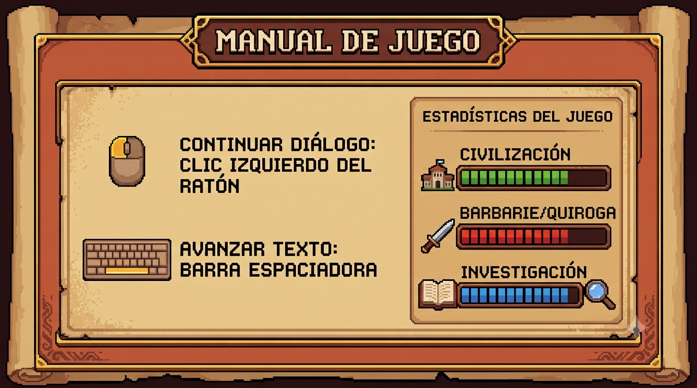

Antes de comenzar la historia, revisá el manual y las indicaciones para jugar.

Continuar diálogos: hacé clic izquierdo con el ratón o presioná la barra espaciadora para avanzar.
Tomar decisiones: cuando aparezcan opciones, elegí la respuesta que prefieras. Tus decisiones influyen en el desarrollo de la historia.
Estadísticas: prestá atención a los indicadores de Civilización y Barbarie/Quiroga, y al de Investigación cuando esté disponible.
Controles adicionales: usá Historial para revisar los diálogos, Ajustes para cambiar la lectura y Menú para regresar al menú principal.